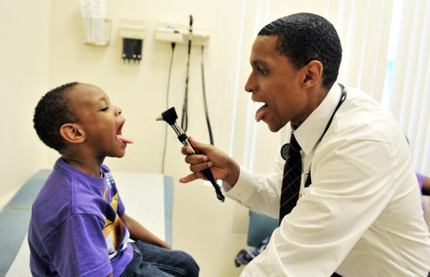

You can locate our Fabainah hospital Centre just few miles after Waterloo.
Hospitals and health systems are entering into a variety of value-based payment models with CMS and private payers. Many value-based agreements with private payers are similar to CMS' program where there are incentives for providing high-quality care that meets certain benchmarks. Others are more complex and may include accountable care organization arrangements, capitated payments for a patient over a set period of time, or bundled payments for certain medical and surgical services.
Our Hospitals is Patient-Centric
A top notch hospitals truly put their patients first – in more ways than one. For example, a top hospital will make it easy for patients to search online for the information they need, whether it’s information about a doctor, information about the hospital’s services, campus maps, registration information, etc.
Empathy
Empathy entails seeing things from a different point of view. You should avoid being biased or judgemental when you are communicating with your patients. Instead, you are supposed to view the situations critically and react accordingly. This would help you in giving more attention your patient as well as knowing the emotional factors affecting them without being biased or judgemental. Patients will always be ready to express their concerns and fears if you are non-judgemental to them.
Learning to listen
What Can You Expect?
At your first appointment with our hospital,you will be given a thorough physical exam. The Doctors will also talk to you about your past medical history. If possible, try to bring with you any past x-rays or test results related to your condition..
Once the treatment plan has been determined

After completing a certain level of treatment, doctors will help you to coordinate the therapies you need. Be sure to follow our doctor's instructions carefully. Your full participation in your treatment is important for a successful outcome.
You Are Not Alone
If you are suffering from any pain or disease and have not been able to find treatment that provides relief, consider seeing our visiting schedule. The comprehensive approach, with you as an important team member, may well be the answer you are looking for.